In the first part of our project, I downloaded raw data from various sources and conducted Exploratory Data Analysis (EDA) to gain insights into the dataset.
I begin by importing the necessary libraries for data manipulation and visualization.
then I focus data cleaning, I carried out data cleaning tasks, including handling missing values, removing duplicates, and handling outliers.
then load the geospatial data into a GeoDataFrame, which allows us to handle geographic information efficiently.
I applied some of Pre-processing techniques, I applied Data Scaling using StandardScaler from Sklearn library, to have zero mean and unit variance. which is crucial for the next step, Next step is applying PCA "Principal Component Analysis" its a typical process for dimensionality reduction, lastly I applied Neares Neighbors, The Nearest Neighbors algorithm used to find the nearest neighbors of each data point in the PCA-transformed space. This can help in clustering
In the final part, we apply machine learning techniques to uncover hidden patterns in our data. Using the PCA-transformed data, we start by finding the three closest neighbors for each data point using the Nearest Neighbors algorithm. This reveals the local structure of our dataset. Next, we apply the DBSCAN clustering algorithm, which excels at identifying clusters of varying shapes and sizes. DBSCAN groups similar neighborhoods based on their characteristics and identifies noise points that do not fit into any cluster. Finally, we identify vulnerable neighborhoods by comparing our clusters with a predefined list of socio-economically challenged neighborhoods. We add a boolean column to our dataset to flag these vulnerable areas. This process transforms raw data into actionable insights, revealing the hidden structure of Breda's neighborhoods and highlighting areas that may need targeted interventions.
 The municipality of Breda examined the state of segregation in Breda and the extent to which Breda's policy is effective in combating segregation in the city. There are several indications that segregation and social inequality between neighborhoods have increased in the past 10 years. I will use the skills and knowledge I have gained over the course of the first year to build an example of how to cluster the neighborhoods for the City of Breda to help combat rising segregation in a completely data-driven manner.
8 weeks